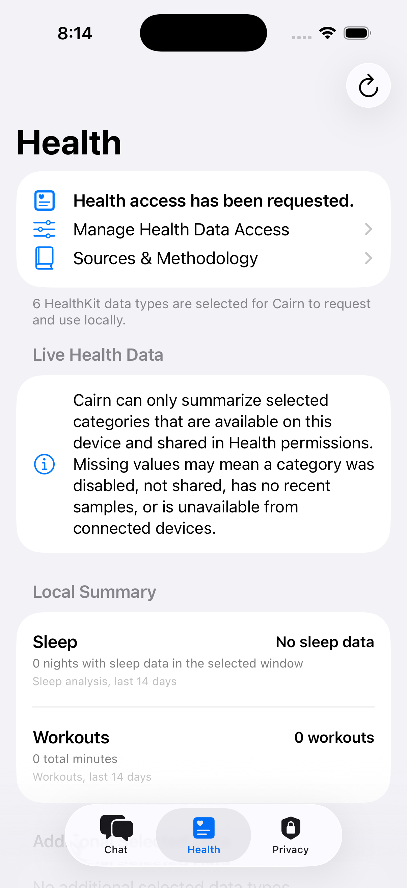
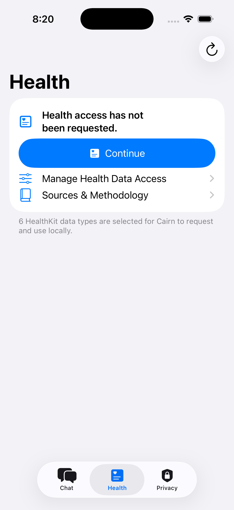
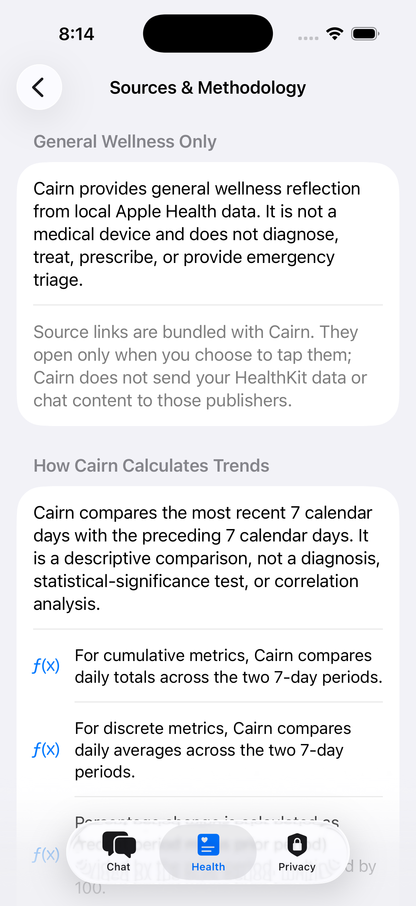
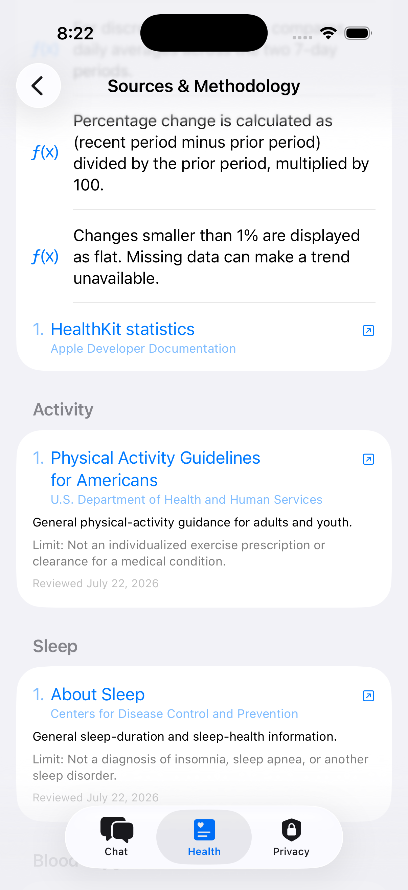
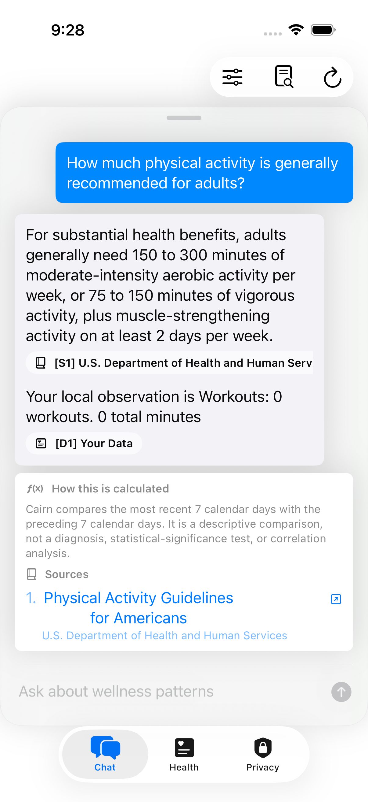

The Product
The app combines a configurable Health dashboard with a collapsible local-chat sheet. Users decide which Apple Health categories Cairn Grove may request and which available trends appear as tiles. Questions can start from a tile or free-form chat, and natural follow-ups retain a bounded window of conversation context.
The experience is deliberately reflective rather than clinical. Cairn Grove can summarize patterns, compare recent periods, and explain reviewed general-wellness context. It does not diagnose, prescribe, recommend medication changes, or replace professional or emergency care.
Cairn Grove is proprietary software. This paper documents the product boundaries and system architecture without publishing production prompts, routing rules, validation thresholds, integrity values, repository structure, or source code.
System Architecture
The design separates permission, data retrieval, evidence, inference, and verification. Gemma is the language layer, not the system of record: Apple Health supplies user data, the bundled evidence library supplies reviewed general context, and app code decides what may be displayed.
Tech Stack
Cairn Grove is built as a local-first iOS application. The production system keeps the app UI, data preparation, inference, validation, diagnostics, and model lifecycle within the native app boundary.
Application
Swift, SwiftUI, structured concurrency, native accessibility, and an iOS 17+ deployment target.
Health Data
Apple HealthKit permissions, bounded statistics and sample queries, local summaries, and configurable trend tiles.
Local Model
Gemma 4 E2B instruction-tuned QAT model in LiteRT-LM format, provisioned after installation.
Inference Runtime
Google AI Edge LiteRT-LM for on-device model loading, conversation state, and streamed generation.
Storage & Networking
App-owned model storage, a background-capable URL session, model verification, and user-controlled deletion.
Quality
XCTest, signed simulator UI tests, real-model regression prompts, network-scope checks, and physical-device acceptance.
Connecting Gemma with LiteRT-LM
Shipping a multi-gigabyte model inside the App Store binary would make every installation and update unnecessarily heavy. Cairn Grove instead separates the app from the model: the app is installed first, explains the local-AI boundary, and downloads the approved Gemma artifact only when the user chooses to continue.
1. Provision after consent
A pinned model artifact is downloaded with progress and recovery support, verified, then moved into app-owned persistent storage. The retained model survives ordinary app updates and can be deleted from the Privacy screen.
2. Initialize lazily
LiteRT-LM does not prepare the native engine during launch or model installation. The runtime is created only when generation is needed, reducing startup pressure and keeping provisioning failures separate from inference failures.
3. Serialize inference
One generation owns the native session at a time. Cancellation, timeouts, retry state, and streamed output are coordinated behind a single lifecycle boundary to protect a memory-intensive local runtime from overlapping requests.
4. Budget the prompt
HealthKit values are converted to concise observations before inference. Recent conversation, retrieved evidence, the current question, and output capacity share a fixed context budget; older conversation is compacted when necessary.
This integration uses the official LiteRT-LM project and a Gemma model subject to Google's Gemma Terms of Use. Cairn Grove does not use a remote inference fallback.
Local Evidence Library & Citations
A useful wellness answer needs more than fluent model output. Cairn Grove bundles a versioned, human-reviewed evidence library containing exact statements, publishers, applicability notes, limits, review dates, and direct source URLs. Retrieval selects only the entries relevant to the current question and available local observations.
Reviewed source
A fixed general-wellness statement from an authoritative publisher.
Your local data
A concise observation calculated from the user's readable HealthKit values.
Methodology
The disclosed method used to calculate a descriptive trend or comparison.
Retrieval before generation
Gemma receives only a compact evidence packet selected for the question; it does not search the web or generate source URLs.
Claim-level verification
General guidance must cite a matching S item, user-specific statements must cite D data, and calculated trends must cite M methodology.
Fail closed
The app can attempt one local repair of an unsupported draft. If verification still fails, the answer is withheld rather than shown without support.
Inspectability
Inline citation controls reveal the exact reviewed statement or local observation, while a permanent Transparency view exposes the prompt, raw output, and validation result.
Privacy Architecture
Privacy is a runtime constraint, not only a policy statement. Cairn Grove is designed so that the most sensitive path never needs a cloud service.
HealthKit reads and summaries
Raw samples are queried locally and reduced to concise values before prompting. Raw HealthKit JSON is not sent to Gemma or a server.
Questions, context, and answers
Conversation context, evidence retrieval, Gemma inference, citation validation, and diagnostics remain local.
User-approved model download
The model file is downloaded only after permission. That request does not include HealthKit values or chat content.
External source links
Reviewed publisher pages open only after the user taps a link, without attaching health data, prompts, or model output.
Read the public Privacy Policy and Model Terms for the product's user-facing commitments.
Development Journey
Cairn Grove reached production through repeated real-model, HealthKit, UI, and App Store review cycles. Several engineering decisions came directly from failures observed in those cycles.
Model delivery moved outside the app bundle
User-approved post-install provisioning reduced the App Store payload while preserving an offline runtime after setup.
Build dependencies became reproducible
Large binary framework resolution was isolated from normal builds, with a local package path used to keep Xcode and Xcode Cloud archives deterministic.
HealthKit access became bounded and explicit
Broad launch-time reads were replaced by user-initiated refreshes, question-specific retrieval, bounded time windows, and progressive dashboard loading.
Conversation gained controlled memory
Recent exchanges remain verbatim while older context is compacted, allowing natural follow-ups without letting stale topics crowd out relevant Health data.
Citations became an acceptance gate
App Review feedback accelerated the move from source footers to claim-level citation validation, local repair, and transparent withholding.
Product Screens
These screens were prepared for Apple review and show the permission boundary, local Health surface, methodology disclosure, evidence catalog, and citation-grounded answer flow.





Selected Technical References
Cairn Grove's implementation and local evidence library use primary platform documentation and reviewed public-health sources. The in-app catalog contains the exact claim-level coverage and limitations used at runtime.